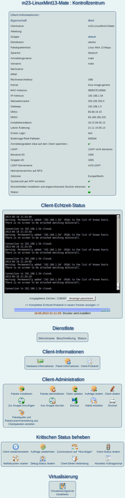

Nächste Seite:
Hinweis zur Virtualisierung
Aufwärts:
Clients verwalten
Vorherige Seite:
Tricks
Inhalt
Kontrollzentrum
Das Kontrollzentrum gibt Ihnen Zugriff auf die Informationen des Clients und bietet umfangreiche Administrationswerkzeuge.

Unterabschnitte
Hinweis zur Virtualisierung
Virtuellen m23-Client starten, anhalten und stoppen
VM-Gastgeberrechner einrichten
root 2016-10-07